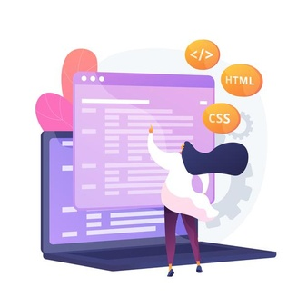

Venha conhecer um pouco sobre mim!
Muito prazer em ter você aqui! Vamos conhecer um pouquinho sobre mim? Vem comigo! Estou aqui para mostrar a vocês principalmente você mulher, que, nós mulheres, mães ou não, solteiras, casadas, divorciadas, jovem ou adulta, que nós também podemos estudar programação, se tornar uma programadora e trabalhar na área. Eu atualmente estou com 20 anos, iniciante na área da programação, mãe de uma linda menina de 2 anos chamada Lívia Maria, casada com um lindo cientista de dados e também dona de casa. Me encontrei na área da programação no início de 2021 na pandemia, aonde eu estava confusa sobre que caminho seguir na faculdade e foi ai que passei a procurar um curso na qual eu realmente me encontrasse. Foi quando eu soube que havia sido aberta as inscrições para o Bootcamp FullStack Developer da Santander, fiz o teste, ganhei a bolsa e passei a fazer o curso que de cara eu já gostei muito. Estou me identificando muito com a parte de front-end, realmente achei a minha cara, e pretendo conciliar com a fotografia que é algo que eu gosto muito de fazer também, que inclusive já fui fotografa a um tempo atrás, então acho que daria um bom complemento pra quem gosta bastante da parte artística, do design. Mesmo com uma rotina atarefada é possível sim estudar a programação ou qualquer outro curso, basta muita força de vontade e um bom plano nos estudos. Espero que eu tenha inspirado vocês mulheres que gostam e se identificam, a também vir para a área da programação, uma área que está dando muitas oportunidades para mulheres. Espero que tenha gostado, muito obrigada pela sua atenção e pela sua visita aqui.